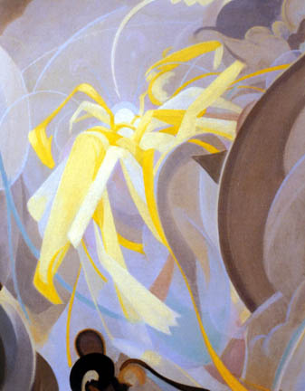
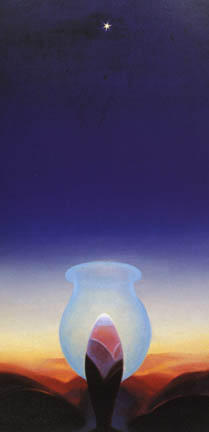

|
Intellectualizing Ecstacy: The Organic and Spiritual Abstractions of Agnes Pelton by Nancy Strow Sheley |
|
In a journal entry dated the evening of November 19, 1942, Agnes Pelton
contemplated her purpose in painting:
Resting in twilight after reading Dostoyevsky, a quietness, thinking if I should start a landscape or go on with abstraction, and feeling poorly, can I do my best with them? . . .still deeper quiet, and it seemed there was a Presence, shadowy but Real--and if so, is this He? It seemed so, and this is my first such intimation--it was an artist presence of deep, gentle power--remote, but directed toward me. So it seemed the abstractions must go on, not to stop them ever, from discouragement.1
 |
|
Fig
1: Light Center, 1961
|
In this reflection, Pelton merged the presence of a divinity with the
spirit of the artist, a combination of religion and art that often found
outlet in her painting. Pelton’s self-declared “life’s
work” was to create meaningful abstractions, her “windows to
an inner realm,” “the exploration of places not yet visited.”
Abstractions, for Pelton, were “a new way of seeing.”2
Meditation, receptivity, study, and divine inspiration created Pelton’s
abstractions. She worked on individual paintings sporadically for months,
sometimes for years. Pelton’s powerful drive to paint these inner
visions also developed over time and resulted from multiple causes. Pelton’s
work in abstraction began during the first two decades of the 1900s when
she lived in New York City and continued throughout her life. She was
working on her final painting, Light Center (fig. 1), when she died in
1961, at her home in the desert community of Cathedral City, California.
In particular, subjects, symbols, and influences suggested by Pelton’s
abstractions can be linked to aspects of her life. Entwined with the personal
and biographical is Pelton’s immersion in the natural world, the
cosmos, mysticism, and the occult.3 Further, the abstractions
express reflections about nature, sexuality, intellect, and creativity.
Even more, her works embody a developing spirituality and make clear her
life’s purpose: to use abstractions to convey her “light message
to the world.”4
A student of Arthur Wesley Dow and Hamilton Easter Field,5
Pelton was already an accomplished painter of representative figures and
landscapes when she exhibited in the Armory Show in 1913. In the 1910s,
Pelton’s imaginative paintings were similar in style to those of
Arthur B. Davies and featured wispy, young ingénues surrounded
by natural landscapes. Even with her early work, Pelton explored abstract
concepts which she identified in titles, like Supremacy (1915), Power
(1916), Inward Joy (1915), Thought (1916, Peace (1922), and Vision (1915).6
Throughout her more than sixty professional years of painting, Pelton
continued to complete portraits, landscapes, and floral scenes to make
a living, but she dedicated her soul to abstraction.
Abstraction became Pelton’s visual representation of a spiritual
quest. She explored multiple ideologies as she developed her own iconography.
Because she believed the Presbyterian and fundamentalist beliefs of her
ancestors were both socially and personally flawed, Pelton investigated
and embraced the tenets of Agni Yoga,7 Theosophy,8
other Eastern religions and New Age philosophies. Pelton was also a “sensitive,”9
believed in auras, made personal choices based on numerology, and explained
physical ailments through astrological chartings. Through the years, she
studied the teachings of Annie Besant and Charles Leadbeater, Krishnamurti,
and Shambhala. In her abstractions, Pelton expressed a strong inner response
to life, including sexuality and creativity. Through her abstractions,
she explored the outer cosmos and her view of an inner world.
Pelton outlined her purpose for painting in a journal entry entitled “Knowledge.”
She copied the following passage from an unidentified Theosophist: “Spiritual
transactions must be translated into the language of mortal senses that
they be understood, so as to be of practical benefit to mortals who desire
to be redeemed from mortality.” These words articulate Pelton’s
design--to translate spiritual messages with her paintings. In brackets
on that page, she added her own comments: “This is where the forms
of the natural world must appear in a picture, or can do so--not for themselves
but to convey thought as future light.”10 Thus, light
is a both a symbol and a subject in Pelton’s abstractions. It represents
enlightenment and ecstasy; it also suggests inspiration and the creative
force.
The principles of Theosophy provided a spiritual grounding for Pelton.
In her journal, she often quoted Helena Blavatsky, but in another journal
entry, she referred to L. W. Rogers’ The Elementary Theosophy. In
particular, she noted Rogers’ reference to “the ray,” always
present in Theosophical teachings. Pelton copied: “It [the ray] is
literally a spark of the divine fire. . .an emanation of God” that
comes to earth and touches the soul.11 Pelton gave form to
this passage in her abstraction, The Ray, 1931 (fig. 2). In this abstraction,
she connects the earthly world with the shaft of light slanted upward.
The flower, centered at the base of the column of light, symbolizes human
creativity; the light source directs the spirit’s journey upward.
 |
|
Fig
2: The Ray, 1931
|
Pelton was drawn to Theosophy because it emphasized knowledge and good
work. It also afforded her a network of practitioners, if and when she
needed support or encouragement. Generally, Pelton worked alone in her
studio, without frequent contact with other artists. However, in 1928-29,
she associated with a spiritualist colony called the Glass Hive12
in Pasadena, California. Leaving her studio in New York City, Pelton planned
to visit her friend Emma Newton in Pasadena for an extended stay. Newton
introduced Pelton to Will Levington Comfort, the leader of the Glass Hive,
and both women became active with the Hive.
Comfort claimed “not to be a Theosophist, nor cultist of any kind,”
yet his beliefs were based on a variety of works, some he named specifically,
including the Bible, Annie Besant’s Thought-Power and Blavatsky’s
Theosophical treatises. He also mentioned “straight Hindu literature,”
Alfred Pierce Signet’s Esoteric Buddhism (1894), the Bhagavad Gila,
and the words of Swami Vivekananda.13 Pelton, who had also
noted these works in her journal, shared a bond with the other artists
and writers associated with the Hive. Further, she embraced Comfort’s
philosophy that meditation prepared the way for an inward journey toward
harmony, peace and purpose. During those months in Pasadena, Pelton’s
creativity soared.
|  |
The Glass Hive was more than an esoteric group of artists and writers exchanging ideas. To Comfort, it was an important link to building a stronger, more civilized world. Membership in the Hive fluctuated, as connections to the group extended nationwide; individuals participated at various levels, some only through the publications, others through association with those who knew Comfort’s books, letters, and periodicals. For five years, 1927-32, Comfort edited a small journal, The Glass Hive, which stated the group’s philosophy and made clear its connection to the Aquarian Foundation. Articles in The Glass Hive covered subjects ranging from astrology to the principles of Agni Yoga, to the cosmos, to communism, to current issues like the “marriage” question, to the creative process, in general, and the production of art, in particular. Although contributors were usually identified only by initials, some named individuals included Dane Rudhyar,14 whose book Seed Ideas--Art as a Release of Power was praised, artist Mabel Alvarez, D.H. Lawrence, Dorothy Brett, Mahatma Gandhi, artist Beatrice Wood, and artist Thomas Tyrone Comfort, to name a few.
|  |
Association with the Glass Hive extended Pelton’s circle of acquaintances. During that 1928-1929 trip to Pasadena, for example, Pelton developed a lasting friendship with Comfort’s daughter Jane. They exchanged letters for more than twenty-five years, and discussed topics such as creativity, astronomy, spirituality, meditation, landscape, painting, writing, health, family, and friendship. While part of the Hive in 1929, Pelton painted and first exhibited Jane’s striking portrait and created Incarnation, an abstraction she dedicated to Jane Comfort. Moreover, during her stay in Pasadena Pelton exhibited Ecstasy, 1928 (fig. 3), and did sketches for Star Gazer, 1929 (fig. 4).15
The environment around the Hive encouraged individual, creative activity. Pelton not only focused on the spiritual quest, but she also explored the physical world. She may have done sketches for one of her first desert landscapes, California Landscape Near Pasadena, dated 1930. At nearby Huntington Botanical Gardens, she filled her sketchbook with detailed drawings of flower heads and stems. Based on her dated sketches, the Huntington Gardens were the probable inspiration for her painting, Lotus for Lida, 1929 (fig. 5), which can be considered one of the earliest abstractions painted in California.
While in Pasadena, Pelton exhibited abstractions, floral works, landscapes,
and portraits at the Grace Nicholson Art Galleries in Pasadena and a select
group of abstractions at Jake Zeitlin Books in Los Angeles. All her activity
attracted notice. Reviewers in the Los Angeles Herald called her paintings
“abstractions externalized on canvas” and touted them as “program
music of the imagination.”16 Pelton was pleased with the
public reception of her abstractions in Los Angeles and enthusiastically
planned an exhibition in New York City at the Montross Gallery for the
following November. A letter to her friend Mabel Dodge Luhan in Taos,
in October 1929, confirmed her expectations:
I am about to start on for me--a real adventure, an exhibition of my “Abstractions” at the Montross Gallery. . . .If you think of any of your friends whom you think would be interested, I would appreciate it if you would send their names for a catalogue. These pictures are, I am sure, my especial [sic] light message to the world. They created considerable interest in California, so I decided it was now or never in New York, and I want to get those people who might be interested in them and what they stand for to come and see them. . . .17
Abstractions were Pelton’s quest for peace in body, mind, and spirit.
Her works exude a timelessness, a journey toward ecstasy in the natural
world or in space beyond.
It is the multivalent concepts of the term “ecstasy” which lead
to the personal in Pelton’s abstractions. Connotations of ecstasy
reach toward physical pleasure, religious understanding, intellectual
enlightenment, and spiritual transcendence. When she painted her flowering
abstraction Ecstasy in 1928 (fig. 3), Pelton entered a cultural debate
about the meaning of the abstract concept of ecstasy. Other artists of
the time, too, explored ecstasy as a subject in abstraction, including
her friend and peer, Raymond Jonson.
 |
Based in the writing and thinking of the time, there is no question that the term ecstasy implied both a sexual and a spiritual release. For example, Will Comfort and Mary Austin were two writers, known by Pelton, who discussed ecstasy in detail. Comfort, for instance, described the exquisite moment of physical ecstasy in his biography, Midstream, which Pelton read soon after its publication in 1914. Comfort said, “The words from the lips of a woman in the ecstasy of love are mystical, vibrant from the very source of things. . . .The man who is not hushed in the presence of it, is not sensitive to divine presence. . . .She is a love-instrument played upon by creative light.”18 Comfort mixed the physical with the divine, but he also linked ecstasy to the creative process when he stated, “There is an ecstasy in the first view of one’s unborn realizations.”19
Austin expressed her views about religious and sexual ecstasy while she
was living in New Mexico in 1919. That year, Pelton spent time with Austin
in Taos as part of Mabel Dodge Luhan’s circle. The women undoubtedly
exchanged views on ecstasy, as it was a topic Austin heatedly debated
in a series of letters written in 1919 to Theodore Schroeder20
of the School of American Research in Santa Fe. In those letters, Austin
appeared to share the same ideas that Comfort had espoused when she said,
“Sex always stirs the part of women which is closest in touch with
the Law of Life. Sex is the prelude to the great experience of continuity
of life, so that there is nothing abnormal, nothing that requires a special
explanation in the close association of sex experience and religious experience.”
She added, “Love and religion are like two strings on a musical instrument.
You cannot pluck strongly at one without raising overtones in the other.”21
Austin disagreed with Schroeder’s insistence that religion was a
debased and perverted sex experience. For Austin, sex and religion were
separate entities, she said, but she did allow that for other women, religion
often became the outlet for sexual energy.22 However, in another
letter, Austin described the ecstatic states she experienced as intellectual,
and religious, noting that the “result of a subconscious perception
of truth” has a “pale glow of exactly the same thing that accompanies
religious ecstasy.”23 Often, the intellectual, sexual,
religious, and emotional references to ecstasy are merged.
Perhaps it is also the multiple connotations of ecstasy and release that
make Pelton’s Ecstasy, 1928 (fig.3) so intriguing. Not only does
this abstraction represent a natural object, a flower, which has sexual
connotations of alluring beauty and reproductive forces of its own, but
the abstraction also contains occult references with its “dark hook”
of energetic craving,24 its blossoming release, and its resultant
opening to the light of the sun. In the poem25 Pelton composed
to accompany this abstraction, she alludes to the multiple meanings of
ecstasy. Physical growth, emotional release, and intellectual aspiration
or enlightenment are mixed with the religious suggestion of ascension
to a higher joy.26 Clearly, Pelton uses the multiple meanings
of “ecstasy” to bind the material and physical world to the
spiritual.
It is in her abstraction, Star Gazer, 1929 (fig. 4), that the combination of the physical and spiritual worlds merge most graphically. Primary colors and a upward, visual trajectory toward the star dominate in this abstraction. The bottom third of the painting contains earth-like images in reds and yellows; the remaining portion consists of a sky in deepening shades of cobalt blue, with one bright, six-pointed orb. At first glance, the most prominent image is a pale green vase on a pedestal of maroons and pink, centered at the bottom of the canvas, surrounded by a rolling mass of hills of dark black-brown, reds, and pale orange. Contained within the vase is a scaled projectile-shaped object, pointed upward. A yellow glow covers the horizon and lights the lower portion of the sky. Pelton’s arrangement of colors, befitting of landscape, earth and sky, has additional occult significance that appeals, perhaps, on the intuitive level to viewers who are aware of the body’s color-coded chakras.27
In Star Gazer, Pelton abstracts both the human figure and the plant to
create a sense of growth, a new beginning, another dawn.28
This abstraction projects multiple images of creativity. Primarily, the
central object is a plant sprouting from the soil, growing toward the
light. However, the projectile within the vase might represent the sexual
act, perhaps a referent to a penis penetrating a womb. The landscape would
then become a body and the united act aimed toward the star, a dual image
of ecstasy, physical and spiritual. In a similar mixture of images, the
star shining in the sky could be the North Star, the traveler’s compass,
or the Star of Bethlehem. It might signify an idea, a heavenly blessing,
or a divine presence. Or, it could simply refer to Venus, the morning
star, as Pelton noted in her journal. As the eye of the night, it could
signify spiritual enlightenment and wisdom, as well as human aspiration.29
Star Gazer becomes more complex when the sexual interpretation moves through
other levels. In this abstraction, there is a creative spirit, a sprouting
plant, a growth within the universal womb, above the plane of the earth.
In Star Gazer, the physical and spiritual ecstasy blend as the destination
is the star, a guiding light.
Pelton’s compulsion to paint abstractions that conveyed her spiritual
aspiration evolved in the 1920s and continued until her death. A selected
series of her paintings illumine patterns of images she developed. Examining
the religious underpinnings in these examples establish Pelton’s
abstractions as personal statements with a universal purpose--to bring
light to life. In these abstractions with a spiritual motif, Pelton created
on canvas an upward movement through space. This sense of trajectus sursum30
is spiritual and physical, earthly and cosmic, real and hopeful. It is
the visible reflection of her inner goal, the sharing of which became
her purpose. Taken as a series, the abstractions--Star Gazer, The Guide,
Illumination, Alchemy, Awakening, Voyaging, and Light Center--illumine
the soul’s journey as seen through Pelton’s painted symbols.
As an overall statement of Pelton’s spiritual vision, these abstractions
illumine a structured progression, regardless of their chronological completion.
Like pieces of the puzzle assembled in different moments of reflection,
meditation, and inspiration, these abstractions are Pelton’s vision
of immortality given painted form.
In Pelton’s design for the spiritual journey, a questioning exists,
at first, a longing for explanation, a gesture toward the heavens, a need
for response. Star Gazer represents that possibility. Then, mentors, philosophies,
and opportunities are provided to spark the individual’s desire to
know. At this point in the quest, the individual looks to The Guide for
direction, discovering that the true source of power, light, and awareness
might exist within the mind. Suddenly, the spiritual quest, which was
once a vague, unformed longing, becomes a way of life, as evidenced in
Illumination. A mystical change occurs as the material of the body and
physical world becomes the spiritual in Alchemy. With this, the soul has
a rebirth, an Awakening, and begins its final, upward journey. In Voyaging
the golden bell rings, a signal that an individual’s life on earth
has prepared the way of the future. In Light Center, the ultimate realization
is simple: the true center of radiance comes from within. What matters
is allowing the spirit to glow outwardly through its human form, sharing
the light with others. In these abstractions and others, Pelton offers
a visual mapping of the path toward enlightenment and spiritual ecstasy.
About her last painting, Light Center, (fig. 1) Pelton said, “Life
is really all light, you know.” In this abstraction, from its intensely
luminous center disk, a white oval radiates outward through the wavy,
lighted “aura” to its hazy, glowing edges. The top of the oval
brushes the cloud forms above as it hovers, suspended in mid-air, over
the earth-tone masses below. A powerful shaft of light cuts through the
blue sky background, covering the middle, vertical third of the canvas.
This connecting ray of light illuminates the cloud edges, encompasses
the white oval, and disappears into the ground below. Faint purple plumes,
like hands, seem to provide a floating resting space for the central oval
of light. This painting does not have a separate star. The light source
is the oval and the circle within.
Pelton’s concept in this abstraction parallels a passage from Dane
Rudhyar’s Art as a Release of Power in his series entitled Seed Ideas.
Rudyhar believed every “organized entity. . .has a life-center, the
heart and soul of the entity. To this center comes impressions from the
outer world. . .from this center radiate impulses which cause various
types of motion, affecting in some ways the outer world surrounding the
boundaries of the organism.” In other words, Rudhyar’s entity
is the center of all impulses, incoming and outgoing, “an evolving
self,” the “All Form, the one Universal Self” which exists
in the “Eternal Now.” At this ultimate point, time and space
do not exist, and the individual Light Center becomes part of the Universal
Soul.31
By replacing the external guiding light, or star, with a white flame or
radiance emerging from a light source within the self, Pelton confirmed
the individual’s powerful role--to bring light to life. Obviously,
in Pelton’s view, “seeing the light” was her spiritual
goal, the sunlight her inspiration, a star her guiding light, and enlightenment--or
spiritual ecstasy--became her work in the world.